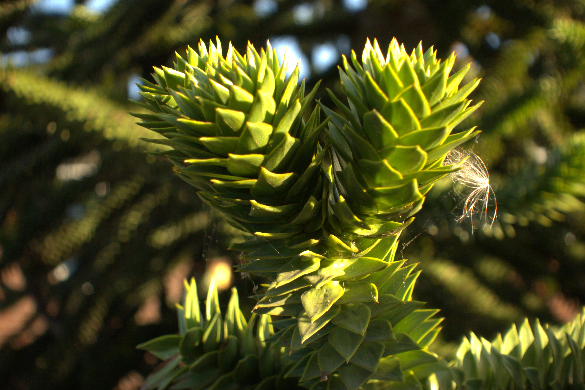
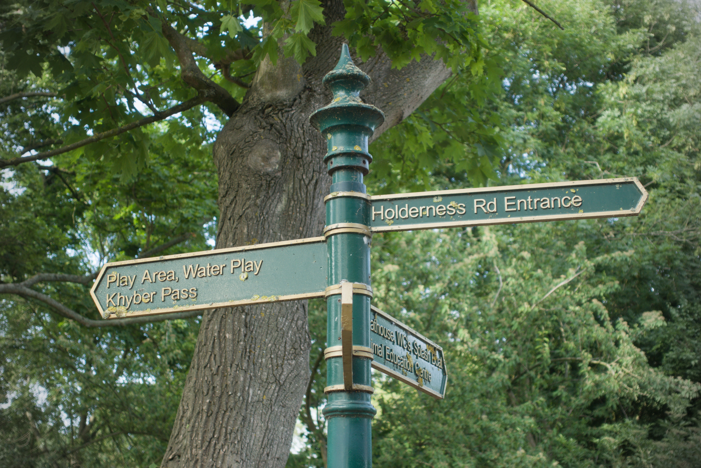
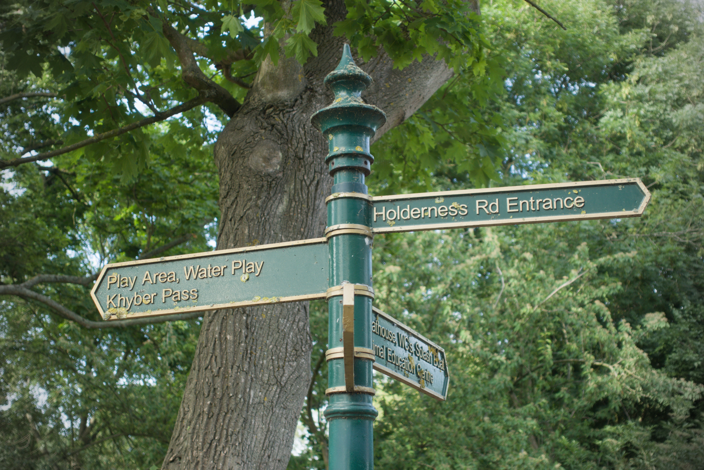

Photo Camera
This is also another hobby I do which is to film and shoot photos!
Ever since I was a kid I always liked taking photos of random stuff with my phone camera but I always wanted to go the next level and shoot on an actual camera. So, I got a sony vlogging camera recently and it made it way better for my ameature photography skills have a look here.
 

Anyway this is one of the more physical hobbies I have been doing for a while as you can see here with some of the pictures here some are edited using photoshop or other photo editing programs and I hope you liked the photos I took and how I managed to edit them!